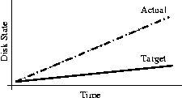
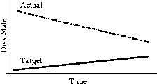
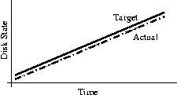

- 00 开篇词 量身定制你的持续交付体系.md
- 01 持续交付到底有什么价值？.md
- 02 影响持续交付的因素有哪些？.md
- 03 持续交付和DevOps是一对好基友.md
- 04 一切的源头，代码分支策略的选择.md
- 05 手把手教你依赖管理.md
- 06 代码回滚，你真的理解吗？.md
- 07 “两个披萨”团队的代码管理实际案例.md
- 08 测试环境要多少？从现实需求说起.md
- 09 测试环境要多少？从成本与效率说起.md
- 10 让环境自己说话，论环境自描述的重要性.md
- 11 “配置”是把双刃剑，带你了解各种配置方法.md
- 12 极限挑战，如何做到分钟级搭建环境？.md
- 13 容器技术真的是环境管理的救星吗？.md
- 14 如何做到构建的提速，再提速！.md
- 15 构建检测，无规矩不成方圆.md
- 16 构建资源的弹性伸缩.md
- 17 容器镜像构建的那些事儿.md
- 18 如何做好容器镜像的个性化及合规检查？.md
- 19 发布是持续交付的最后一公里.md
- 20 Immutable！任何变更都需要发布.md
- 21 发布系统一定要注意用户体验.md
- 22 发布系统的核心架构和功能设计.md
- 23 业务及系统架构对发布的影响.md
- 24 如何利用监控保障发布质量？.md
- 25 代码静态检查实践.md
- 26 越来越重要的破坏性测试.md
- 27 利用Mock与回放技术助力自动化回归.md
- 28 持续交付为什么要平台化设计？.md
- 29 计算资源也是交付的内容.md
- 30 持续交付中有哪些宝贵数据？.md
- 31 了解移动App的持续交付生命周期.md
- 32 细谈移动APP的交付流水线（pipeline）.md
- 33 进阶，如何进一步提升移动APP的交付效率？.md
- 34 快速构建持续交付系统（一）：需求分析.md
- 35 快速构建持续交付系统（二）：GitLab 解决代码管理问题.md
- 36 快速构建持续交付系统（三）：Jenkins 解决集成打包问题.md
- 37 快速构建持续交付系统（四）：Ansible 解决自动部署问题.md
- 持续交付专栏特别放送 答疑解惑.md
- 持续交付专栏特别放送 高效学习指南.md
- 结束语 越痛苦的事，越要经常做.md
20 Immutable！任何变更都需要发布
在专栏的第13讲《容器技术真的是环境管理的救星吗？》中，我们初步结识了不可变基础设施（Immutable Infrastructure），这里我们再一起回顾一下：
在这种模式中，任何基础设施的实例（包括服务器、容器等各种软硬件）一旦创建之后便成为一种只读状态，不可对其进行任何更改。如果需要修改或升级某些实例，唯一的方式就是创建一批新的实例来替换它。
这种思想与不可变对象的概念完全相同。
为什么我会说，不可变基础设施的思想对持续交付的影响非常深远呢？因为不可变的思想正是解决了持续交付一直没有解决的一个难题，即环境、顺序、配置这些基础设施在测试环节和生产环节的不一致性所带来的问题。
那么，今天我就来详细分析一下不可变基础设施的由来、影响，以及如何实现的相关内容。
从持续交付中来
如果你是一个程序员，其实很容易理解不可变基础设施的概念，以及其实现的方式。因为它就和Java中的不可变类完全相同：类实例一旦创建，就无法变更，而可以变更的是指向实例的引用。
其实早在2011年出版的《持续交付：发布可靠软件的系统方法》一书中，就曾提到“蓝绿发布”的概念：你需要更新一组实例，但并不是直接在原有实例上进行变更，而是重新启动一批对等的实例，在新实例上更新，然后再用新实例替换老实例。此时老实例仍旧存在，以便回滚。
其实，这完全就是对不可变类的物理实现，也就是一个典型的不可变模型。
这里，我抛出了“不可变模型”的概念，那么我们再垂直一些，再来看看由不可变模型转化到不可变基础设施，又会有哪些具体的要求。
综合起来一句话，就是：
对任何的包、配置文件、软件应用和数据，都不做CRUD（创建、替换、更新、删除）操作。
也就是说，对于已经存在的基础设施，不再在其上创造任何新的事物。根据不可变模型，推导得出取而代之的方法则是：
构建一个新的基础设施；
测试新的基础设施是否符合需求；
将引用指向这个新的基础设施；
保留原有基础设施以备回滚。
虽然不可变模型的设想很好，但其中也会有一些特殊情况存在。比如，涉及数据的部分，特别是数据库，你不可能每次都重建一个数据库实例来达到“不可变”的目的。为什么呢？其根本原因是，数据库是有状态的。所以，从这里可以清楚地看到，不可变（Immutable）的前提是无状态。
不可变基础设施的神话
说到为什么会需要“不可变基础设施”这种方法论，还是挺有意思的。
首先是一个假设：如何保证两个实例的行为完全一致？最有效的方式是，在两个实例上以同样的顺序执行同样的变更。
然后，在2002年，Steve Traugott 写了一篇名为《为什么顺序很重要》（Why Order Matters）的论文，虽然论文本身涉及了很多数学推理，有些难懂，但它却很好地解释了为什么大规模基础设施是不可变的，并证明了不可变的价值所在。
第一，一致是最终的目标
在论文中，作者讨论了发散、收敛和一致三种模型。
- 发散， 是我们通常会碰到的基础设施的管理模型。在这个模型中，基础设施随着我们的想法而变化，也就是我们想更新什么就更新什么，最终就会形成一种发散的形态。

《Why Order Matters》论文中的发散模型
- 收敛， 是Puppet和Chef遵循的设计原则。随着时间推移，目标和实际需求汇聚，达到一致。通过这个模型，我们有了可扩展的基础设施的基础和实现。

《Why Order Matters》论文中的收敛模型
- 一致， 指的是整个基础设施始终把每一天当成是与第一天相同的模型。根据我们之前的假设，达到这一目的的关键点就在于，有序地正确执行从真正的第一天开始的所有变更。

《Why Order Matters》论文中的一致模型
那么你就会有疑问，为什么会有一致模型？通过发散和收敛这两个模型，没办法解决实例完全一致的问题吗？答案是，确实不行。
即使我们知道发散是一种不良状态，我们可以通过定期的收敛，将基础设施不断地趋向所期望的目标。但其中也会碰到很多问题。
顺序问题：你只有完全保证顺序的正确性，结果才会正确。但是，怎么保证顺序呢？特别是执行结果与你的预期不一致时，比如发生错误时，就会多出一些其他的处理步骤，直接影响原有的既定顺序。这也是为什么顺序那么重要的原因。
频率问题：假设你可以通过一些方法保证顺序，在面对大型基础设施时，应该如何制定收敛频率呢？最简单的回答，自然是越频繁越好。- 那么你就会陷入巨大的陷阱中，你会发现完全无法支撑并发的收敛工作。而且收敛工作与设施的规模成正比，直接否定了系统的可扩展性。
蝴蝶效应：你始终无法确定一个绝对的基准点，认为是系统的初始或者当前应该有的状态。因为你始终还在收敛中，只是无限趋近。因此任何小偏差，都会引起将来重大的、不可预知的问题。这就是蝴蝶效应。
但是，容器却通过分层镜像与镜像发布技术，解决了上面的顺序问题、频率问题和蝴蝶效应。所以说，容器是一个惊人的发明，它使得每一次变更都成为了一次发布，而每一次发布都成为了系统的重新构建， 从而使得“一致”模型的目标能够达成。
第二，Immutable的衍生
当然除了容器之外，Immutable 理念还有许多不同的衍生。比如，黄金映像、VDI（虚拟桌面）、Phoenix Server和基础设施即代码。
- 黄金映像，指的是将绝大部分不变的基础设施（包括操作系统、大多数软件、基本配置等），包含在映像内，只留很少一部分变更通过脚本执行解决；
- VDI（虚拟桌面），指的是操作系统运行在后端的服务器上，用户只使用属于他自己的虚拟桌面，无法改变后端的系统内容；
- Phoenix Server，指的是完全被破坏的服务器，能够从灰烬中自动进行恢复；
- 基础设施即代码，指的是把基础设施的构建以代码的方式组织起来，从而通过运行代码可以完全构建出你想要的全部基础设施。
这些衍生技术都遵循Immutable的理念，曾在不同的场景下，比如快速灾备、快速恢复系统、增强系统健壮性等方面发挥了巨大的作用，从而收益。
但是，随着技术的发展，这些衍生技术不再能够适应我们对速度和扩展性的要求，加之容器技术的蓬勃发展，使得这一系列的难题都可以通过容器技术解决，因此我们已经完全可以把注意力放到容器上了。
回到持续交付中去
虽然我们一起从持续交付中走了出来，了解了不可变基础设施的种种，但最终我们还是要回持续交付中去，去解决构建持续交付平台的问题。那么，接下来我们就一起看看面对容器时代的新形式，持续交付要做哪些变化吧。
“不可变”模型的好处，已经显而易见。而对于容器时代的持续交付，也显然已经从原来单纯交付可运行软件的范畴，扩展为连带基础环境一起交付了，所以我们需要为此做好准备。
上文中，我已经总结了一句话，每一次变更都是一次发布，而每一次发布都是系统重新构建，更形象点说，每一次发布都是一个独立镜像的启动。所有持续交付的变化也都可以表现为这样一句话，那具体怎么理解呢。
首先，任何的变更，包括代码的、配置的、环境的，甚至是CPU、内存、磁盘的大小变化，都需要制作成独立版本的镜像。
其次，变更的镜像可以提前制作，但必须通过发布才能生效。 这有2个好处：
重新生成新的实例进行生效，完全遵循不可变模型的做法；
发布内容既包含代码也包含基础设施，更有利于DevOps的实施。
再次，一组运行中的同一个镜像的实例，因为“不可变”的原因，其表现和实质都是完全一样的，所以不再需要关心顺序的问题。因为任何一个都等价，所以也就没有发布或替换的先后问题了。
最后，根据“一致”模型的要求，我们需要记录系统从第一天发展到今天的所有有序变更。 对Docker而言，不仅要能向上追溯层层Base镜像的情况，更建议将系统和软件的配置以Dockerfile的方式进行处理，以明确整个过程的顺序。
这些理念，不仅传统的持续交付中没有涉及，甚至有些还与我们日常的理解和习惯有所不同。比如，你通常认为一个集群中的不同服务器的配置是可以不一样的，但在“不可变”模型中，它是不被允许的。
当然，我在之前的《容器技术真的是环境管理的救星吗？》一文中也提到过，Immutable对持续交付的环境管理来说确实有点违反人性。所以，容器对持续交付的影响，可以说是利弊都有吧。
也因此，持续交付中遇到“不可变”，更应该去理解它的概念和用意，合理发挥其优势。
总结
首先，我分享了“不可变”模型的概念，以及它的由来，介绍了三个非常有价值的模型：发散模型、收敛模型和一致模型。
其次，我解释了为什么“不可变”如此重要的原因，也就是重复发散到收敛过程无法解决的三个问题：顺序问题、频率问题和蝴蝶效应。
最后，我针对“不可变”及容器，提出了持续交付面对的新问题，即：每一次变更都是一次发布，每一次发布都是一个独立的镜像的启动。
思考题
你所在的公司有没有什么地方可以体现出“不可变”思想？如果没有，是什么原因呢？
感谢你的收听，欢迎你给我留言。
© 2019 - 2023 Liangliang Lee. Powered by gin and hexo-theme-book.